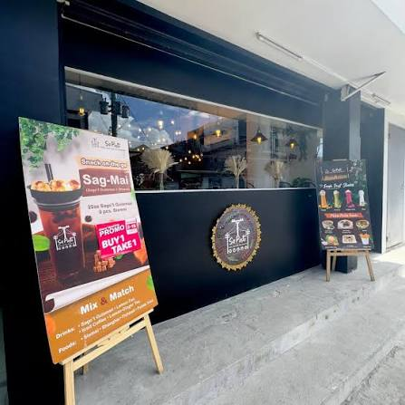
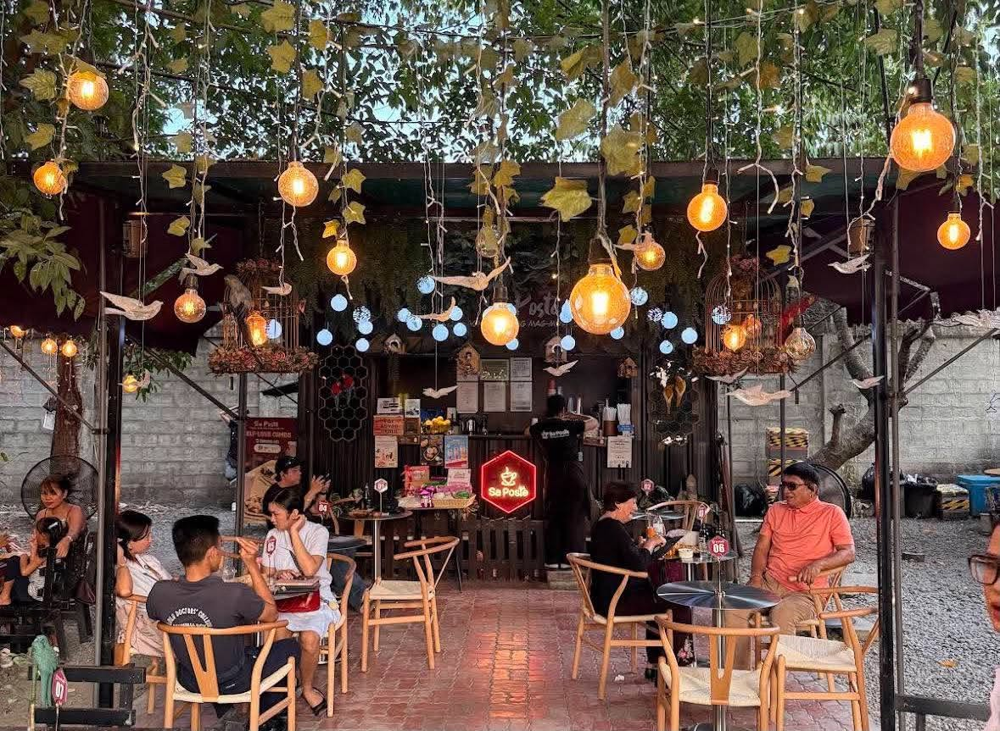

Our Story
A Café Built For The Neighborhood.
"Kaon, Inom Kag Mag-Move-On!"

01 / Our Story
From a street corner stall to your neighborhood.
Sa Poste Café started as a small drinks stall with a simple goal of serving the people of Iloilo affordable and delicious coffee and shakes. The name "Sa Poste," meaning "at the post," reflects its humble beginnings as a convenient stop where people could grab their favorite drinks while passing by.
What started with a limited selection of iced coffee and fruit shakes gradually grew into a wider menu. As customer demand increased, the café introduced snacks such as cheese rolls, ensaymada, burgers, burritos, and homemade siomai, giving customers more options to enjoy alongside their drinks.
The Jaro branch along Del Carmen Street was established to serve students, workers, and nearby residents looking for affordable refreshments and quick snacks. With its welcoming atmosphere and convenient setup, customers can comfortably dine in or take their orders home.
Today, Sa Poste Café has expanded to five other locations in Molo, Pavia, SM Central Market, Festive KTOWN, and along C1. Despite its growth, the café remains committed to its original goal of providing quality products at reasonable prices, along with quick and friendly service.
More than just a place to buy coffee and snacks, Sa Poste Café aims to be a familiar and welcoming spot where people can relax, enjoy good food and drinks, and create simple moments with friends and family.



Coffee • Shakes • Cheese Rolls • Burgers • Rice Meals • Burrito • Ensaymada • Siomai
02 / What We Stand For
Mission, Vision & Values.
Mission
To serve Iloilo affordable, flavorful drinks and snacks with fast, friendly service — one branch, one neighborhood at a time.
Vision
To be the neighborhood café Ilonggos think of first for an everyday coffee run, known across Iloilo for consistency and value.
Values
Consistency in every cup, warmth in every interaction, and prices that keep a daily coffee habit within reach.
03 / Find Us
From our counter, to your everyday.
Sa Poste Café · Jaro
KL Building, Del Carmen Street, Barangay Javellana, Jaro, Iloilo City
Daily · 10:00 AM – 2:00 AM
Sa Poste · Molo
Locsin St, Molo, Iloilo City
Daily · 10:00 AM – 12:00 AM
Sa Poste · Pavia
Lopez Jaena St, Pavia, Iloilo
Daily · 11:00 AM – 9:00 PM
Sa Poste · C1
Petron Gas Station, C1 Road, Iloilo City
Daily · 10:00 AM – 9:00 PM
Sa Poste · SM Central Market
Iloilo Central Public Market, Rizal St, Iloilo City Proper, Iloilo City
Daily · 10:00 AM – 9:00 PM
Sa Poste · KTOWN
Festive Walk, Mandurriao, Iloilo City
Daily · 10:00 AM – 10:00 PM